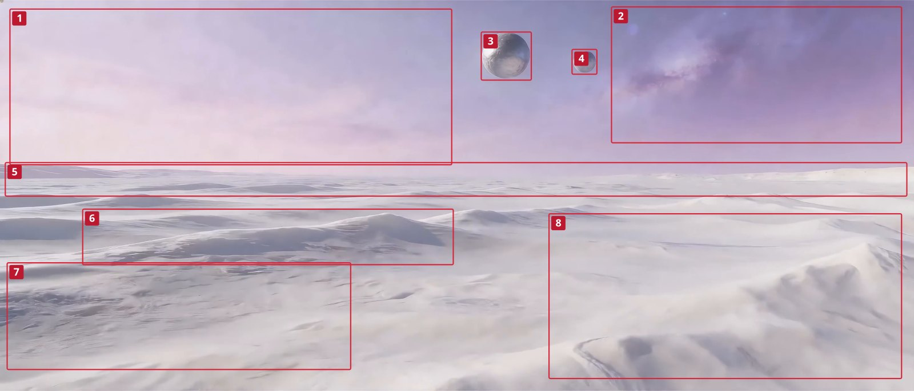
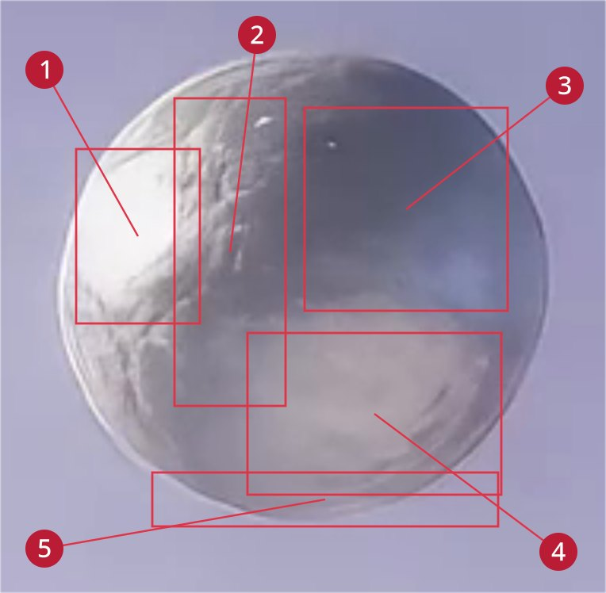
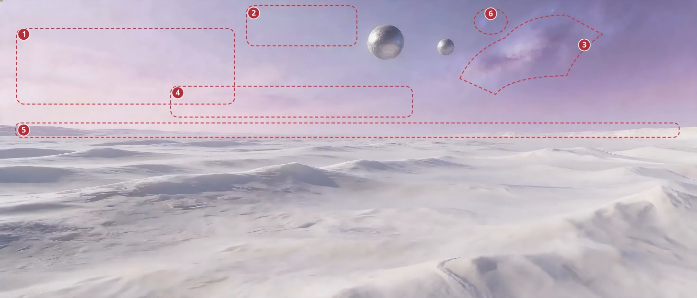

白海与双月幻想海洋
围绕 2940×1260 宽幅概念图展开的全景、双月天体与幻想天空三重视角拆解：聚焦低饱和乳白涌浪、岩尘月面与软边晕染大气。
全景海面 · 双月地貌 · 晕染天空（3 视图）第一章：设计总览
CHAPTER ONE · 12 SPEC ITEMS (F-01 — F-12)- F-01TYPE
设计类型
一幅适合转译为实时 3D 场景的宽幅科幻海洋环境图，主体为连续流动的乳白海水与双月。
- F-02STYLE
风格
写实光照与空间透视承载超现实的白海、双月和粉紫晕染天空，呈克制电影概念图气质。
- F-03MOOD
第一印象
辽阔来自低而宽延的海天线，安静来自低饱和宽缓浪面，异星感来自双月与乳白海色。
- F-04GRAMMAR
视觉语言
柔和色域之间穿插折线浪脊、局部流痕碎纹、分叉月面脊纹与右上局部云带。
- F-05LAYOUT
布局构图
画幅约 2.33∶1，海天线在 44%–45% 高度；双月偏上偏右，右上云带聚细节、左侧舒展留白。
- F-06HIERARCHY
视觉层级
双月清晰轮廓居首要焦点，近中景灰紫浪背与右上暗芯云带为次焦点，远海渐隐消融。
- F-07COLOR
色彩系统
海面暖灰白受光配蓝灰紫暗坡；天空左暖粉灰、右冷紫蓝、近海玫瑰灰彼此软边渗透。
- F-08TYPEFACE
文字排印
画面不含任何文字界面；转为实时 3D 场景时应保持画幅纯净，辅助提示宜默认退隐或支持一键隐藏。
- F-09SURFACE
形状与材质
海水由宽缓涌浪、弯曲浪脊与局部短流痕三尺度构成；双月为低饱和岩/尘质大明暗而非光滑金属球。
- F-10GRAPHICS
图像与装饰
右上仅少量薄云与淡蓝针尖亮点，无满天繁星、强光束或彩虹色装饰。
- F-11MOTION
动态线索
静图不证明真实流速；转译为动态场景时宜采用缓慢推进的多尺度涌浪，保持舒缓安静的节奏。
- F-12TAKEAWAY
学习重点
优先锁定大构图、大明暗与“局部集中细节、大片保持安静”的疏密分布，避免满铺均匀噪声。
第二章：完整设计分析
CHAPTER TWO · 7 ANALYTICAL MODULES围绕这张 2940×1260 超宽画幅环境概念图，依次从全景海面（1–8）、双月天体地貌（1–5）与幻想晕染天空（1–6）三重视角展开拆解。画面摒弃岸线、人物、建筑与船只，仅凭乳白涌浪、一大一小两颗月球与粉紫冷暖渐变天穹建立完整世界感。
三种核心观感各有明确结构来源：辽阔来自 2.33∶1 宽画幅与层层雾化的远浪；柔和安静而不空洞来自大面积低对比平缓面中局部嵌入的细微色差与折线浪脊；异星空灵则由不透明乳白海水、粉紫薄雾与双月比例节奏共同托起。

| 编号 | 组件名称 | 所属区域 | 作用 | 可见特征 |
|---|---|---|---|---|
| 01 | 左侧天光 | 天空左半 | 提供柔和暖亮基底 | 浅粉灰 #D9CBDE，高明度、极淡横向云气 |
| 02 | 右上云气与星点 | 天空右上 | 建立冷暖与纵深 | 紫蓝底 #8A7EA9，局部粉紫亮云、暗尘带与弱星点 |
| 03 | 大月球 | 天空主体 | 首要视觉焦点 | 左上受光亮弧、右上暗区、下部大块浅色盆地 |
| 04 | 小月球 | 天空次主体 | 与大月建立节奏 | 直径约为大月 46%，略偏右下且明显分离 |
| 05 | 海天过渡带 | 海天交界 | 柔化远景边界 | 远浪低对比雾化，无锐利直线切割 |
| 06 | 中景浪脊 | 海面中景 | 建立方向与体积 | 长短不一、略弯曲，亮脊配灰紫背坡 #8A8799 |
| 07 | 近景碎纹 | 海面左近 | 提供流动材质感 | 不规则短流痕与局部小反光，不铺满全水 |
| 08 | 宽缓浪面及转折 | 海面右近 | 形成疏密呼吸 | 大片柔滑灰白面 #D1CBD2，仅局部边缘折起 |

| 编号 | 组件名称 | 所属区域 | 作用 | 可见特征 |
|---|---|---|---|---|
| 01 | 左侧受光高地 | 月面左缘 | 确立主光源方向 | 暖灰白大亮区，内部保留破碎轮廓而非单一镜面高光 |
| 02 | 中尺度分叉脊纹 | 明暗交界带 | 打破光滑球体观感 | 断续弧形层纹与分叉脊线，比均匀小坑更具识别度 |
| 03 | 右上暗色平原 | 月面右上 | 拉开球体大体积 | 大片低饱和蓝灰紫暗区，自然融入右上冷色天空 |
| 04 | 下部浅色盆地 | 月面中下 | 平衡暗区重量 | 中性浅灰大块面，边界不规则非标准圆斑 |
| 05 | 下缘薄大气染边 | 月面底缘 | 衔接天空环境光 | 极克制的薄反光与大气染色，轮廓干净无厚光环或锯齿 |

| 编号 | 组件名称 | 所属区域 | 作用 | 可见特征 |
|---|---|---|---|---|
| 01 | 左暖粉灰舒展区 | 天空左中 | 提供安静呼吸感 | 宽缓过渡的浅粉灰雾，不平均塞满云朵 |
| 02 | 上中冷蓝过渡 | 双月左侧 | 衔接暖左与冷右 | 偏冷蓝灰紫软边渗入，保持低对比 |
| 03 | 右上主云带 | 小月右侧 | 天空次焦点与空间感 | 同时具备暗芯、亮雾与少量较清晰云带边缘 |
| 04 | 中下玫瑰灰薄雾 | 海天上方 | 缓冲海面与高空色差 | 暖玫瑰灰横向轻抹，向下柔和收敛 |
| 05 | 海平线统一雾带 | 海天交界 | 消除接缝色差 | 海面与天空共享方向雾色，远处对比度同步衰减 |
| 06 | 局部淡蓝亮点 | 云带上方 | 极克制星点点缀 | 仅少量淡蓝光斑与针尖亮点，绝不喧宾夺主 |
STYLE · 风格与流派
克制的超现实电影环境概念图（Cinematic Environment Concept），以空气透视与宽画幅低机位确立空间感。
TECHNIQUE · 视觉技法
三尺度波浪（宽缓涌浪 + 弯曲折线浪脊 + 局部短流痕）、双月颜色/凹凸/光照分离控制、天空湿画软边叠色。
MOOD · 情绪氛围
寂静、辽阔、柔和但不空洞的异星海洋氛围。
推荐检索组合：milky white ocean swells twin moons cinematic environment · lavender pink overcast sky atmospheric perspective · low-contrast rocky moon terminator diffuse atmosphere
#D9CBDE 向右上紫蓝 #8A7EA9 软边渗透，细节集中于右上云带静图与实时运动的边界：单张静图无法证明海浪流速、云移速度或月球自转；转为实时 3D 场景时应将运动显式视为氛围设计假设，并保留固定机位与暂停检视能力。
远景网格过滤：实时海洋在远景网格变稀时需按顶点间距过滤高频细浪，避免出现折面与碎斑；远海与天空共享同一方向雾色可消除海天接缝。
在实时 3D 引擎（如 Godot 4 Forward+ 或 Unreal）中构建可漫游的“白海与双月”超现实海洋环境。 【构图与尺度】2.33∶1 宽画幅，低机位平视海面，海天线约在画面 44%–45% 高度；大月球中心约 (55.4%, 14.4%)，小月球约 (64.0%, 15.7%)，半径比例约 2.16∶1，两者清晰分离。主画面保持无文字干扰，辅助提示默认隐藏或支持一键开关。 【白海材质与波形】不透明乳白色海水，采用三尺度连续涌浪：宽缓大起伏 + 长短不一且略弯曲的折线浪脊 + 仅分布于部分近景浪坡的短流痕与微白沫。受光面偏暖灰白 (#D1CBD2)，背坡偏蓝灰紫 (#8A8799)，远处对比度随海天共享方向雾色自然衰减，并按网格密度过滤高频细浪，避免远景出现折面与碎斑。 【天空与双月】天空左侧浅粉灰 (#D9CBDE) 保持舒展留白，右上沉降至冷紫蓝 (#8A7EA9)，在小月球右侧以软边叠色布局局部粉紫薄云（含暗芯、亮雾与少量弱星点）。双月以球面反照率与法线分离控制：先确立左暖亮区、右上蓝灰暗区与下部浅色盆地，再叠中尺度分叉脊纹与极薄的大气染边，杜绝光滑塑料高光与满球均匀噪点。 【验收标准】固定机位静帧与参考图在海天线高度、双月比例、左暖右冷色域及疏密分布上对齐；海天交界自然消融无色差接缝；缓慢运动状态下画面依旧舒缓不噪。